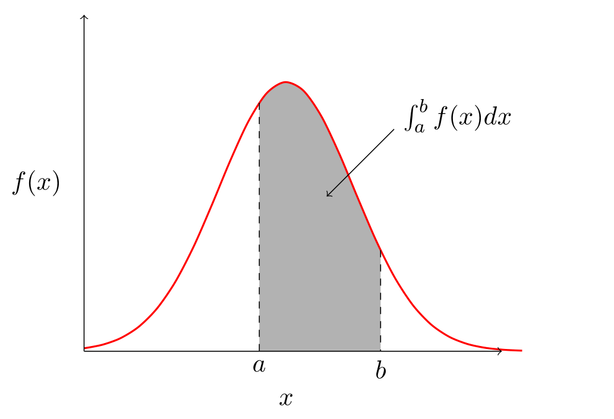
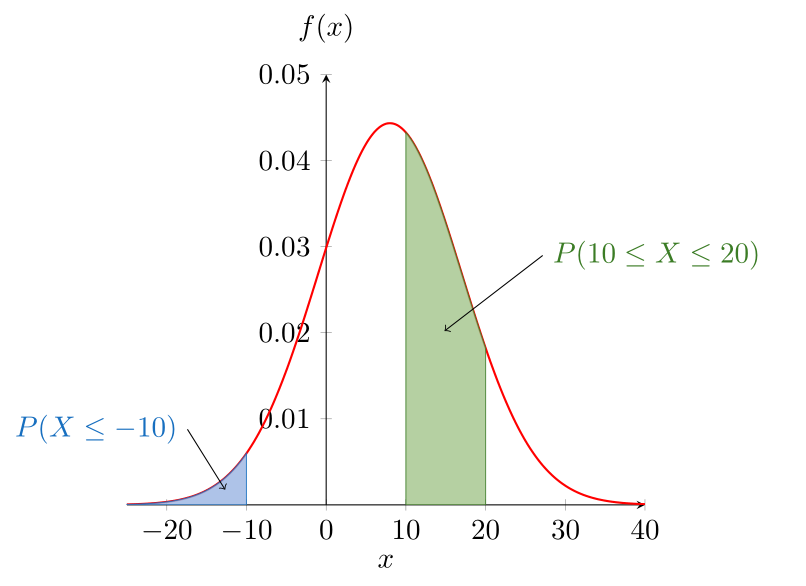
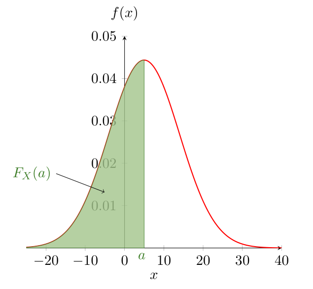

3 Variables Aléatoires Continues
Densité d’une variable aléatoire continue
Dans les chapitres précédents nous avons traité des variables aléatoires discrètes, c’est-à-dire de variables dont l’univers est fini ou infini dénombrable. Il existe cependant des variables dont l’univers est infini non dénombrable. On peut citer par exemple, l’heure d’arrivée d’un train à une gare donnée ou encore la durée de vie d’un transistor. Désignons par \(X\) une telle variable.
Définition 3.1 \(X\) est une variable aléatoire continue s’il existe une fonction \(f\) non négative définie pour tout \(x \in \mathbb{R}\) et vérifiant pour tout ensemble \(B\) de nombres réels la propriété
\[ P(X \in B) = \int_B f(x)dx \tag{3.1}\]
La fonction \(f\) est appelée densité de probabilité de la variable aléatoire \(X\).
Tous les problèmes de probabilité relatifs à \(X\) peuvent être traités grâce à \(f\). Par exemple pour \(B=[a,b]\), on obtient grâce à l’équation (3.1)
\[ P(a\le X \le b) = \int_a^bf(x)dx \tag{3.2}\]
Graphiquement, \(P(a\le X \le b)\) est l’aire de la surface entre l’axe de \(x\), la courbe correspondante à \(f(x)\) et les droites \(x=a\) et \(x=b\). Voire Figure Figure 3.1) et Figure Figure 3.2).

Définition 3.2 Pour toute variable aléatoire continue \(X\) de densité \(f\):
\(f(x) \ge 0 \quad \forall \, x \in \mathbb{R}\)
\(\int_{-\infty}^{+\infty}f(x)dx = 1\)
Si l’on pose \(a=b\) dans (3.2), il résulte \[P(X=a)=\int_a^a f(x)dx = 0\]
-
Ceci siginifie que la probabilité qu’une variable aléatoire continue prenne une valeur isolée fixe est toujours nulle. Aussi on peut écrire
\[P(X < a) = P( X \le a) = \int_{-\infty}^a f(x)dx\]
Exercice
Soit \(X\) la variable aléatoire réelle de densité de probabilité
\[f(x)= \left\lbrace \begin{array}{ll} kx & \mbox{si} \quad 0\le x \le 5\\ 0 & \mbox{sinon} \end{array} \right.\]
- Calculer \(k\).
- Calculer: \(P(1 \le X \le 3), P(2 \le X \le 4)\) et \(P(X < 3)\).
Exercice
Soit \(X\) une variable aléatoire réelle continue ayant pour densité de probabilité \[f(x)= \left\lbrace \begin{array}{ll} \frac{1}{6} x + k & \mbox{si} \quad 0\le x \le 3\\ 0 & \mbox{sinon} \end{array} \right.\]
- Calculer \(k\).
- Calculer \(P(1 \le X \le 2)\)
Fonction de répartition d’une v.a.c
Définition 3.3 Si comme pour les variables aléatoires discrètes, on définit la fonction de répartition de \(X\) par:
\[\begin{aligned} F_X \colon \mathbb{R} &\longrightarrow \mathbb{R} \\ x &\longmapsto F_X(a) = P(X \le a)\end{aligned}\]
alors la relation entre la fonction de répartition \(F_X\) et la fonction densité de probabilité \(f(x)\) est la suivante:
\[\forall \quad a \in \mathbb{R} \quad F_X(a)= P(X \le a) = \int_{-\infty}^a f(x)dx\]
La fonction de répartition \(F_X(a)\) est la primitive de la fonction densité de probabilité \(f(x)\) (donc la densité d’une v.a.c est la dérivée de la fonction de répartition), et permet d’obtenir les probabilités associées à la variable aléatoire \(X\), en effet:
Propriétés: Pour une variable aléatoire continue X:
\(F'_X(x) = \frac{\text{d}}{\text{d} x} F_X(x) = f(x)\).
Pour tous réels \(a \le b\), \[\begin{aligned} P(a < X < b) & = P(a < X \le b) \\ & = P(a \le X < b) \\ & = P( a \le X \le b) \\ & = F_X(b) - F_X(a) = \int_a^bf(x)dx \end{aligned}\]
La fonction de répartition correspond aux probabilités cumulées associées à la variable aléatoire continue sur l’intervalle d’étude (Figure Figure 3.3)).

Propriétés: Les propriétés associées à la fonction de répartition sont les suivantes:
\(F_X\) est continue sur \(\mathbb{R}\), dérivable en tout point où \(f\) est continue.
\(F_X\) est croissante sur \(\mathbb{R}\).
\(F_X\) est à valeurs dans \([0,1]\).
\(\lim\limits_{x\to - \infty} F_X(x) = 0\) et \(\lim\limits_{x\to +\infty} F_X(x) = 1\).
Fonction d’une variable aléatoire continue
Soit \(X\) une variable aléatoire continue de densité \(f_X\) et de fonction de répartition \(F_X\). Soit \(h\) une fonction continue définie sur \(X(\Omega)\), alors \(Y=h(X)\) est une variable aléatoire.
Pour déterminer la densité de \(Y\), notée \(f_Y\), on commence par calculer la fonction de répartition de \(Y\), notée \(F_Y\), ensuite nous dérivons pour déterminer \(f_Y\).
Calcul de densités pour \(h(X)=aX+b\)
\(\forall \quad y \in \mathbb{R}\),
\[F_Y(y) = P(Y\leq y)=P(h(X) \le y) = P(aX+b \le y)\] si \(a>0\), \[F_Y(y) = P(aX+b \le y) = P(X\leq \frac{y-b}{a})=F_X(\frac{y-b}{a})\] si \(a<0\), \[F_Y(y) = P(aX+b \le y) =P(X\geq \frac{y-b}{a})=1-F_X(\frac{y-b}{a})\]
En dérivant on obtient la densité de \(Y\) \[f_Y(y)=\frac{1}{|a|}f_X(\frac{y-b}{a})\]
Calcul de densités pour \(h(X)=X^2\)
Si \(y<0\), \(F_Y(y) =P(Y\leq y)=0\).
Si \(y>0\),
\[ \begin{align} F_Y(y) &=P(Y\leq y)=P(X^2 \le y)\\ &=P(-\sqrt{y}\leq X \leq \sqrt{y}) \\ &=F_X(\sqrt{y})-F_X(-\sqrt{y}) \end{align}\]
En dérivant on obtient la densité de \(Y\),
\[f_Y(y)= \left\lbrace \begin{array}{ll} \displaystyle \frac{1}{2\sqrt{y}}\big[f_X(\sqrt{y})+f_X(-\sqrt{y})\big] & \mbox{si} \quad y \ge 0\\ 0 & \mbox{sinon} \end{array} \right.\]
Calcul de densités pour \(h(X)=e^X\)
Si \(y<0\), \(F_Y(y) = P(Y\leq y)=0\).
Si \(y>0\), \(F_Y(y) = P(Y\leq y)=P(e^X \le y)=P( X \leq \ln (y))=F_X(\ln(y))\).
En dérivant on obtient la densité de \(Y\)
\[f_Y(y)= \left\lbrace \begin{array}{ll} \displaystyle \frac{1}{y} f\big(\ln (y)\big) & \mbox{si} \quad y \ge 0\\ 0 & \mbox{sinon} \end{array} \right.\]
Exercice
Soit la v.a.c \(X\) ayant la fonction de densité
\[f_X(x)= \left\lbrace \begin{array}{ll} 2 x & \mbox{si} \quad 0 \le x \le 1\\ 0 & \mbox{sinon} \end{array} \right.\]
Déterminer la densité de: \(Y=3X+1\), \(Z=X^2\) et \(T=e^X\).
Espérance et variance de variables aléatoires continues
Espérance d’une v.a.c
Définition 3.4 Si \(X\) est une variable aléatoire absolument continue de densité \(f\), on appelle espérance de X, le réel \(E(X)\), défini par:
\[E(X)= \int_{-\infty}^{+\infty}x f(x) dx\] si cette intégrale est convergente.
Les propriétés de l’espérance d’une variable aléatoire continue sont les mêmes que pour une variable aléatoire discrète.
Propriétés: Soit \(X\) une variable aléatoire continue,
\(E(aX+b)=aE(X)+b \quad \quad a \ge 0 \,\, \text{et} \,\, b \in \mathbb{R}\).
Si \(X \ge 0\) alors \(E(X) \ge 0\).
Si \(X\) et \(Y\) sont deux variables aléatoires définies sur un même univers \(\Omega\) alors \[E(X+Y)=E(X)+E(Y)\]
Théorème 3.1 (Théorème du transfert) Si \(X\) est une variable aléatoire de densité \(f(x)\), alors pour toute fonction réelle \(g\) on aura
\[E[g(X)] = \int_{-\infty}^{+\infty}g(x) f(x) dx\]
Exercice
Soit la v.a.c \(X\) ayant la fonction de densité
\[f_X(x)= \left\lbrace \begin{array}{ll} 2 x & \mbox{si} \quad 0 \le x \le 1\\ 0 & \mbox{sinon} \end{array} \right.\]
Calculer l’espérance des variables aléatoires \(Y=3X+1\), \(Z=X^2\) et \(T=e^X\).
Variance d’une v.a.c
La variance d’une variable aléatoire \(V(X)\) est l’espérance mathématique du carré de l’écart à l’espérance mathématique. C’est un paramètre de dispersion qui correspond au moment centré d’ordre 2 de la variable aléatoire \(X\).
Définition 3.5 Si \(X\) est une variable aléatoire ayant une espérance \(E(X)\), on appelle variance de \(X\) le réel
\[V(X)=E\big([X-E(X)]^2\big) = E(X^2) - [E(X)]^2\] Si \(X\) est une variable aléatoire continue, on calcule \(E(X^2)\) en utilisant le théorème @ref(thm:transfert),
\[E(X^2) = \int_{-\infty}^{+\infty}x^2 f(x)dx\]
Propriétés: Si \(X\) est une variable aléatoire admettant une variance alors:
\(V(X) \ge 0\), si elle existe.
\(\forall \quad a \in \mathbb{R}, V(aX) = a^2 V(X)\)
\(\forall \quad (a,b) \in \mathbb{R}, V(aX+b) = a^2 V(X)\)
Si \(X\) et \(Y\) sont deux variables aléatoires indépendantes, \(V(X+Y)=V(X)+V(Y)\)
Définition 3.6 (Ecart-type) Si \(X\) est une variable aléatoire ayant une variance \(V(X)\), on appelle écart-type de \(X\), le réel:
\[\sigma_X = \sqrt{V(X)}\]